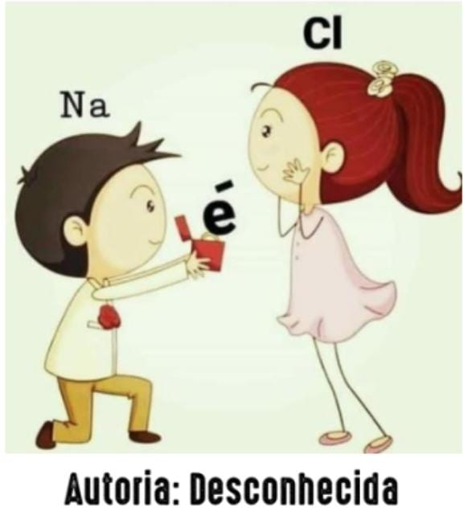
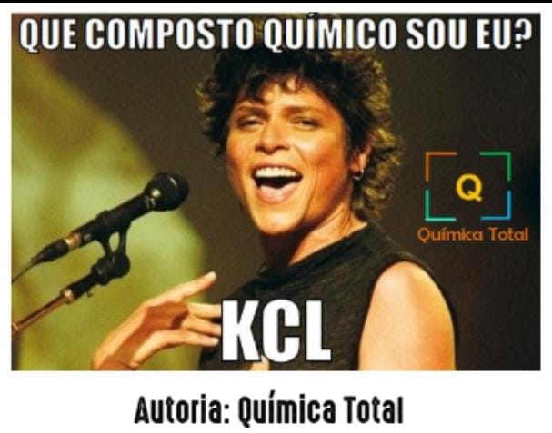
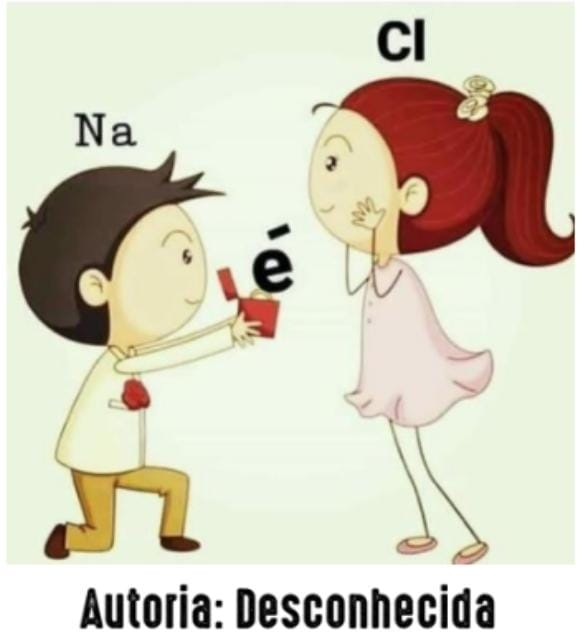
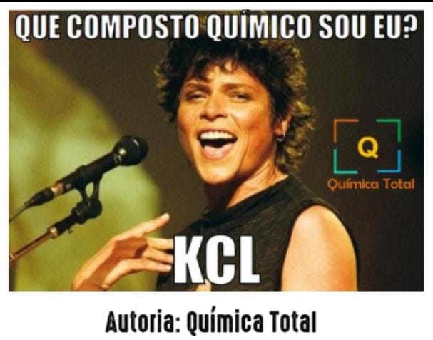
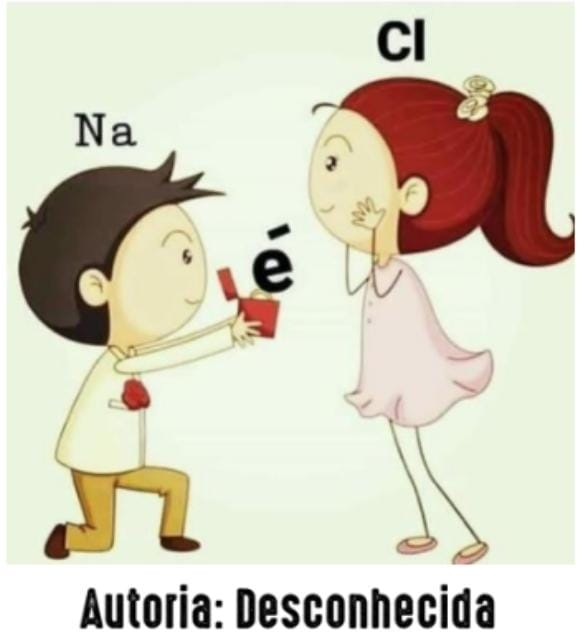
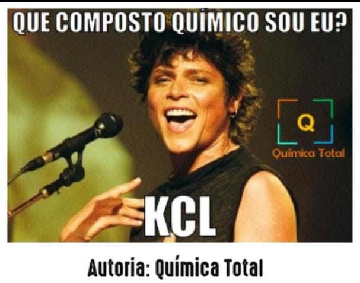

Site feito para o componente de Química, sobre o conteúdo de Ligaçoẽs Quimicas.
 



Site feito para o componente de Química, sobre o conteúdo de Ligaçoẽs Quimicas.
Em 1901 o químico Gilbert Newton Lewis estabeleceu a primeira teoria de ligação química ampla que agrupava todos os tipos de ligação química permitindo mostrar relações entre substâncias iônicas, covalentes e metálicas, ou seja, a natureza da ligação entre átomos dos elementos químicos.
Pela teoria de Lewis, os átomos tendem a interagir, formando compostos variados em um processo de formação e ruptura de ligações.
O conceito de Ligações Químicas, foi consolidado por Linus Pauling a partir da Teoria de Ligação Química de Lewis, são interações que ocorrem entre átomos (inter atômica) para formar moléculas ou substâncias. Os átomos buscam a estabilidade eletrônica ao realizarem uma ligação química, o que é explicado pela teoria ou regra do octeto.
“É a força atrativa que mantém dois ou mais átomos unidos.”
Podem ser consideradas:
O número de elétrons disponíveis para a ligação é indicado por pontos desemparelhados.
As ligações covalentes podem ser representadas pelos símbolos de Lewis dos elementos.
Nas estruturas de Lewis, cada par de elétrons em uma ligação é representado por uma única linha.
A Teoria do Octeto, também denominada por Regra do Octeto, surgiu a partir da constatação de Linus Pauling, ao perceber que os únicos elementos encontrados isolados na natureza de maneira estável são os gases nobres (família ou grupo 18, VIIIA ou zero).
A Regra do Octeto estabelece que os átomos dos elementos ligam-se uns aos outros na tentativa de completar a sua camada de valência (última camada da eletrosfera). A denominação “regra do octeto” surgiu em razão da quantidade estabelecida de elétrons para a estabilidade de um elemento, ou seja, o átomo fica estável quando apresentar em sua camada de valência 8 elétrons. Para atingir tal estabilidade sugerida pela Regra do Octeto, cada elemento precisa ganhar ou perder (compartilhar) elétrons nas ligações químicas, dessa forma eles adquirem oito elétrons na camada de valência.
Resulta da transferência de elétrons deum metal para um não-metal.
Ligação covalente: resulta do compartilhamento de elétrons entre dois átomos. Normalmente encontrada entre elementos não-metálicos.
Quando átomos similares se ligam, eles compartilham pares de elétrons para que cada um atinja o octeto.
Cada par de elétrons compartilhado constitui uma ligação química.
⇰Por exemplo: H + H H2 tem elétrons em uma linha conectando os dois núcleos de H.
É possível que mais de um par de elétrons seja compartilhado entre dois átomos (ligações múltiplas):
Para que uma ligação covalente coordenada ocorra é necessário que um dos átomos compartilhe um par de elétrons com outro átomo, e ao mesmo tempo, faça cessão de um ou mais elétron(s) com outro átomo, que apenas participa da ligação recebendo o(s) elétron(s).
Para facilitar o entendimento, vejamos como esse tipo de ligação funciona:
A ligação covalente coordenada ocorre somente se o átomo que é responsável pela doação de elétron(s) estiver estabilizado de acordo com a regra do octeto, ou seja, primeiramente ocorre o compartilhamento dos elétrons com um átomo, até que ambos estejam estáveis, para somente após esta estabilização ocorrer a doação do(s) elétron(s) para o outro átomo tornar-se estável.
Na simbologia de Lewis, as ligações onde ocorrem a doação de elétrons são representadas por setas (→) e as ligações onde ocorre o compartilhamento de elétron são representadas por um hífen ligando os elétrons (• ─ •).
É a força atrativa que mantém metais puros unidos.
As ligações metálicas, também conhecidas como ligas metálicas, são ligações químicas que ocorrem entre átomos de metais que fluem livremente por uma camada cristalina bem definida.

